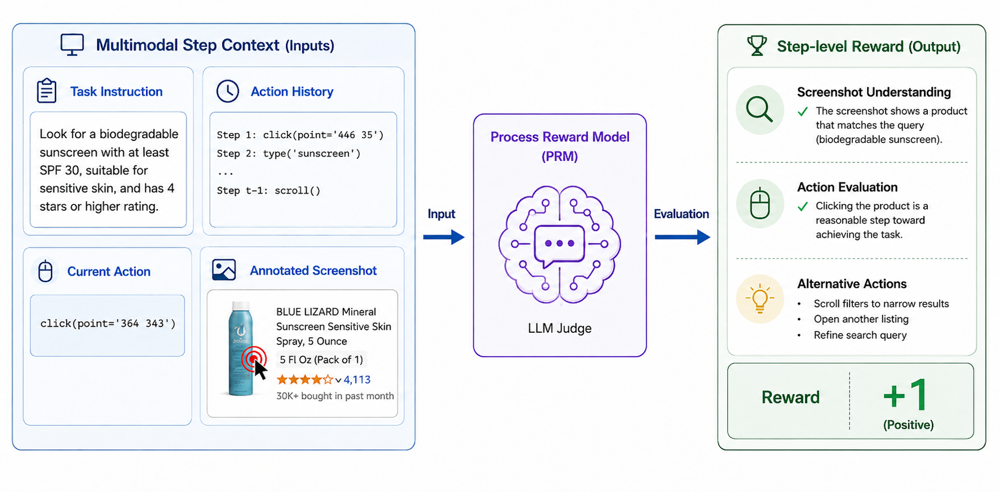
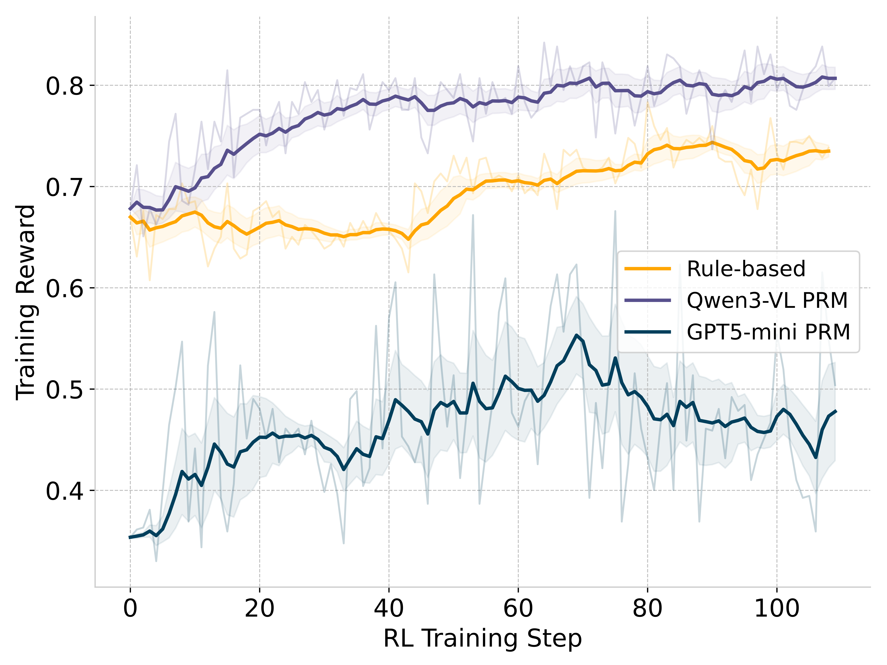
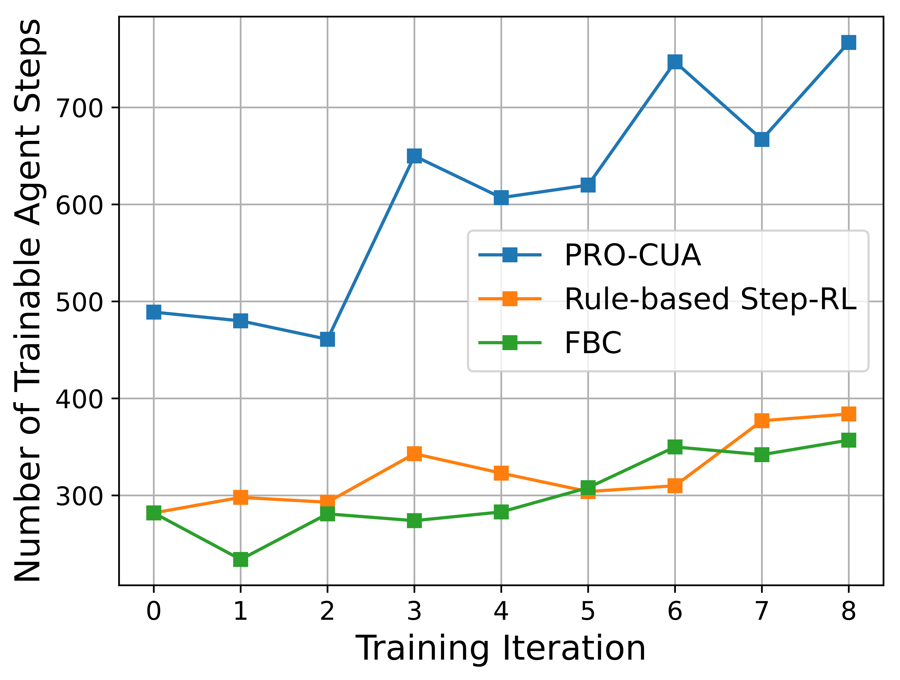

Tailored CUA infrastructure design
PRO-CUA decouples environment interaction and model training, avoiding the systems burden of simultaneously performing agent rollout, live GUI interaction, and policy optimization.
Computer use agents can automate complex digital workflows, but their training is limited by costly live environment interaction and scarce high-quality supervision. Filtered behavior cloning suffers from imitation bottlenecks and lacks negative learning signals, while trajectory-level reinforcement learning faces sparse rewards, ambiguous credit assignment, and expensive long-horizon GUI interaction.
PRO-CUA addresses these constraints with a process-reward optimization framework. The current policy first collects states through live rollouts. For each collected state, the agent samples diverse candidate actions, a process reward model gives step-level feedback, and GRPO updates the policy using group-relative advantages. This creates dense credit assignment without golden answers or offline expert trajectories.
PRO-CUA decouples environment interaction and model training, avoiding the systems burden of simultaneously performing agent rollout, live GUI interaction, and policy optimization.
The framework removes reliance on offline expert demonstrations and trains the agent on states sampled from its own execution distribution, including the difficult states it actually encounters.
PRO-CUA replaces sparse trajectory-level rewards with PRM-graded step-level GRPO, providing fine-grained supervision without requiring golden answers from expert demonstrations.
The current policy interacts with live web environments at an elevated sampling temperature. The resulting task instructions, screenshots, and action histories form a state dataset drawn from the agent's own behavior.
For each collected state, the policy samples multiple candidate thought-action pairs. These candidates are newly generated and are not treated as references for imitation.
A multimodal process reward model evaluates whether each proposed action is visually grounded, non-redundant, and useful for task progress, returning a binary step-level reward.
Group-relative advantages reinforce locally better actions and reduce pressure to imitate a single expert reasoning trace, allowing valid alternative action paths.
We compare PRO-CUA against two key self-evolving baselines that represent common ways to turn live CUA rollouts into training data. Filtered Behavior Cloning (FBC) keeps only successful trajectories and trains the policy to imitate their observed thought-action sequences. This is simple and stable, but it discards failed trajectories, overfits to easy successes, and gives no negative learning signal for recovering from mistakes.
Rule-based Step-RL uses successful trajectories as golden references, samples candidate actions at each retained state, and rewards candidates that match the reference action in type, target, and text input. This gives denser feedback than FBC, but it still depends on successful rollouts and golden actions. It can penalize valid alternative actions and cannot naturally learn from failed states where no verified reference action is available.
Since candidate actions in the optimization stage are not executed in the live environment, PRO-CUA asks the PRM to evaluate the proposed action directly from the current multimodal context. The screenshot is annotated at the target coordinates so the PRM can judge whether the action is visually grounded and useful for task progress.

A central question for PRO-CUA is whether process reward model feedback is reliable enough to optimize the policy. To isolate the reward source, we run a controlled ablation on WebVoyager where rule-based rewards and PRM-based rewards train on the same subset of states from successful trajectories. This setting favors the rule-based baseline because golden reference actions are available and failed trajectories are excluded.
| Method | Reward type | Success rate |
|---|---|---|
| Base model | / | 27.5 |
| Step-RL | Rule-based | 34.7 |
| Step-RL | Qwen3-VL-4B PRM | 36.6 |
| Step-RL | GPT-5-mini PRM | 36.8 |
Both PRM variants outperform the rule-based reward despite using the same successful-state subset. The result indicates that visually grounded functional evaluation can be a stronger step-level training signal than exact matching to a single demonstration action.

The moving-average reward curves show a clear calibration gap: GPT-5-mini is stricter, while Qwen3-VL-4B assigns positive rewards more often. PRO-CUA does not require the absolute reward scale to be perfectly calibrated, because GRPO computes mean-centered advantages within each sampled group. The PRM mainly needs to distinguish better and worse candidate actions locally; the training signal is then aggregated across many states, sampled actions, and updates.
PRO-CUA improves over filtered behavior cloning and rule-based Step-RL while using no external expert steps in the controlled self-evolving setting.
| Training paradigm | Method | Ext. expert steps | WebVoyager | Mind2Web-Live | OnlineMind2Web |
|---|---|---|---|---|---|
| External expert / closed data | UI-TARS-1.5-7B | Closed data | 30.3 | 18.1 | 14.6 |
| WebSTAR-7B | 100K | 47.0 | 17.0 | 17.0 | |
| WebSTAR-32B | 100K | 53.5 | 20.4 | 23.8 | |
| GUI-Libra-4B | 81K | - | - | 20.0 | |
| GUI-Libra-8B | 81K | - | - | 19.3 | |
| Self-evolving 4B | Qwen3-VL-4B-Instruct | 0 | 27.5 | 18.1 | 16.7 |
| FBC | 0 | 29.7 | 26.4 | 23.7 | |
| Rule-based Step-RL | 0 | 34.7 | 27.8 | 29.9 | |
| PRO-CUA | 0 | 42.4 | 34.7 | 28.8 | |
| Self-evolving 8B | Qwen3-VL-8B-Instruct | 0 | 25.6 | 20.8 | 12.2 |
| FBC | 0 | 31.8 | 23.6 | 26.9 | |
| Rule-based Step-RL | 0 | 33.8 | 25.0 | 26.2 | |
| PRO-CUA | 0 | 43.2 | 30.6 | 28.2 |
PRO-CUA's process rewards allow the training loop to use both successful and failed finished trajectories. This differs from FBC and rule-based Step-RL, which rely on successful rollouts: FBC needs complete successful trajectories for imitation, while rule-based Step-RL needs golden reference actions at each retained state.

In practice, agents may spend many steps stuck on the same page, so we apply lightweight filtering and retain states from finished trajectories. Finished trajectories are not necessarily successful: the final answer may still be wrong. Because PRM grading does not require a golden next action, these failed-but-finished trajectories can still produce useful step-level supervision, improving the fraction of on-policy interaction that becomes deployable training data.
@article{he2026pro,
title={PRO-CUA: Process-Reward Optimization for Computer Use Agents},
author={He, Yifei and Yang, Rui and Bai, Hao and Zhang, Tong and Zhao, Han},
journal={arXiv preprint arXiv:2605.29119},
year={2026}
}